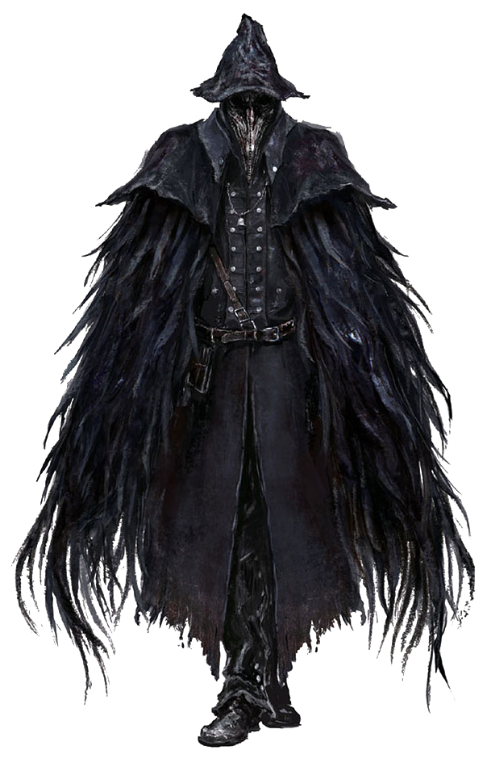
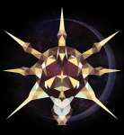

Eileen the Crow |
|
|---|---|
|  | |
| General Info | |
| Location | Drops |
| Central Yharnam (Sewer Entrance) | 5198 (2318) Blood Echoes Crow Hunter Badge |
Eileen the Crow is a non-player character in Bloodborne. Wearing a Beak Mask, this hunter is a dual-wield "skill" hunter.
The Raven Hunter: A hunter with an unusual pair of warped swords. Wears a raven mantle and a doctor's mask, uses bizarre swordsmanship. Well, she seems to be an ally...
General Information
Eileen is an assassin whose sworn duty is to dispose of other hunters that have been corrupted by their lust for blood. Like the player, she hails from outside Yharnam and is a foreigner to the region, but her presence in the city is driven by an entirely different set of motives; she makes a point of keeping a low profile operating in the shadows, and you may never meet her in the first place if you don't go out of your way to explore. You can start her quest either on the Dry Dock - Rafters in Central Yharnam or to the left of the Oedon Chapel's front entrance in the Cathedral Ward, and your choices after that point will determine her fate. Helping her defeat Henryk in the Tomb of Oedon is the tipping point of her quest - failure to do so before entering the Forbidden Woods for the first time will sometimes result in her becoming your enemy, and will prevent you from receiving any of the successive rewards other than the Crow Hunter Badge. It is best to complete the Tomb of Oeden portion of the quest before progressing further.
- Gives the Crow Hunter Badge and Hunter Caryll rune after completing her quest line.
- Drops: If killed, will give 5198 (2318, on first encounter.) Blood Echoes and Crow Hunter Badge (Amount of blood echoes dropped after defeating seems to change depending on which phase of the game you are in). Testing needed
- Crow Hunter Badge unlocks the armor Crowfeather Set and Weapon Blade of Mercy for purchase from the Messengers.
- She is the leader of the Hunter of Hunters Covenant.
- Gestures given during quest:
- "Shake Off Cape"
- "Shhh!"
- "Approval"
- "Wait"
Locations
- Location 1: From the Central Yharnam Lamp: (1.) Exit the gate next to Gilbert, go down the stairs; (2.) Go left, down the next stairs, past the two brick trolls; (3.) Before the stairs going down to the elevator, turn right and head up the next stairs; (4.) Head left, around this corner, and down the stairs, towards the wolves in cages; (5.) Cross the bridge, and the lamp where the old lady is, down into the structure with a bunch of barrels; (6.) On the right side of the room, drop through the barrel blocked window onto a small walkway, and head right; (7.) Again, on the right wall, is a barrel blocked window; (8.) Enter through this window and head straight to meet with Eileen looking over the railing.
- Location 2: From the Cathedral Ward lamp: (1.) Head straight out, (2.) Immediately turn left tight when you exit the door, and you will see her standing next to the railing; (3.) If you have seen the Lesser Amygdala, she is standing in the same location. After exiting the doorway, turn left.
- Notes:
- You must have opened two gates first: (A.) The large gate to the circular area, towards the Cathedral; and (2.) After going up the stairs, a short way, and turning right, you will have to pull a lever to open the smaller gate, leading back to the Cathedral Ward.
- Killing Darkbeast Paarl may cause her to disappear.
- Killing the Witch of Hemwick before speaking to her in Cathedral Ward will not affect her being in that location.
- Notes:
- Location 3: The Tomb of Oedon. This Lamp will not be accessible and will need to be traveled to via the Central Yharnam or Cathedral Ward lamp.
- Location 4: Fighting the Bloody Crow of Cainhurst at the Grand Cathedral. This event will occur after slaying Rom, the Vacuous Spider.
- Location 5: There is a pool of blood, where normally the top Chapel Giant stands -- if you have failed or talked to Eileen after killing the hostile hunter and received her rewards, you may see this blood stain here.
Quest Line
- Eileen can initially be found in a side room accessed from the rafters, at the Central Yharnam Sewer entrance. This entrance is hidden behind boxes and barrels near a staircase and is very close to the old lady that you can send to a safe place.
She will give you 4 Bold Hunter's Mark and the "Shake Off Cape" Gesture (be sure to speak with her twice).
If you miss her and complete Central Yharnam, she'll show up in Cathedral Ward.
- To progress her questline, speak with her in Cathedral Ward. (You need to open all 3 gates in the area ahead for her to appear in Cathedral Ward)
She can be found by exiting via the doorway directly in front of the Cathedral Ward lantern and immediately looking left.
She will teach you the "Shhh!" Gesture and tell you about the Tomb of Oedon encounter. She will not appear in this location until you have opened the shortcut gate leading to the Grand Cathedral. This can be done by purchasing the Hunter Chief Emblem and clearing most of Cathedral Ward. Note: If you do not purchase the Hunter Chief Emblem, You can still open the gate via the Abandoned Old Workshop.
- At the Tomb of Oedon lamp you will have to help Eileen with the fight with Henryk to receive "Approval" Gesture. You will also receive the Heir Caryll Rune from the Henryk's corpse. If she dies in this encounter, the quest line will not continue.
Be Warned, accidentally hitting her too many times whilst trying to help with the Henryk encounter may turn her hostile after the fight. She remains hostile even if you reload the area. The Poison Knives located in the alley near Arianna can ensure Henryk dies first without risk of Eileen turning hostile. If you die during the fight but the poison kills him as you are dying, he will respawn and you will have to fight him again.
- After defeating Rom, the Vacuous Spider you will find Eileen at the top of the steps to the Grand Cathedral. You must assist her with the hunter encounter inside the Grand Cathedral to complete her quest line.
Be warned, the fight in the Grand Cathedral is very hard and can only be fought solo, but can be cheesed (patched out as of 1.04).
Completing the quest line will reward you with the Crow Hunter Badge and will offer the ability to join the Hunter of Hunters Covenant.
Attention, If you miss all steps 1 - 3, she will vanish completely after the death of Rom, the Vacuous Spider. Be Warned, if you at least talked to her once and missed steps 2 or 3, she will instead hunt you at the Grand Cathedral after the death of Rom, the Vacuous Spider. - You can find an analysis of the Questline along with related media on Fextralife , specifically here.
Dialogue
Upon speaking with her at the sewers:
Oh, a hunter, are ya? And an outsider? What a mess you've been caught up in. And tonight, of all nights."
Here, to welcome the new hunter." (Gives 'Bold Hunter's Mark' x4)
Prepare yourself for the worst. There are no humans left. They're all flesh-hungry beasts, now."
Still lingering about? What's wrong? A hunter, unnerved by a few beasts? Heh heh... No matter."
"Without fear in our hearts, we're little different from the beasts themselves." (Gives 'Shake off Cape' expression)
"What are you still doing here? Enough trembling in your boots. A hunter must hunt."
Outside Cathedral Ward:
Oh, hello there."
"Perfect timing. I must warn you..."
"...not to go near the tomb below Oedon Chapel in the Cathedral Ward."
"Henryk, an old hunter, has gone mad."
"And he's my mark..." (Gives Shh! gesture)
"Don't go near the tomb below Oedon Chapel in the Cathedral Ward."
"I have business there first..." (giggles)
After the Tomb of Oedon hunter fight:
(Breathing Heavily) "That wasn't necessary of ya."
"But you have my thanks."
"We made it with our lives... You're not bad at all."
"You must have killed Gascoigne as well then."
"He was falling apart... I'm sure it had to be done."
"But try to keep your hands clean... The Hunter should hunt Beasts."
"Leave the hunting of Hunters, to me." (Laughs) (Gives Approval gesture) (Runs away)
At the top of Grand Cathedral steps when friendly:
"Oh, is that you again?"
"I'm afraid I've made a bit of a blunder. I'm just going to have a short rest."
"Oh, don't worry, I've taken blood. Enough to save an old woman."
"No more dreams for me. This is my last chance."
"What a fool I am. I'll have to tread carefully."
"But that thing still lies in wait. Turn back. This is my score to settle." (Gives Wait gesture)
"My prey lies in wait this way. Turn back. This is my score to settle."
After the Grand Cathedral hunter fight:
"Don't you ever listen to your elders? No matter, you did save my life."
"I don't seem to be apt for this life anymore... My glory days were long ago now..."
"Hmmm, I know... Here, for you." (Gives Crow Hunter Badge, Hunter rune)
"This too is hunters' work, but bears no honor. A burden you may choose to carry."
"The decision is yours alone. Ahh, my eyes grow heavy..."
"Let me rest a while... ...I'll be fine, just wait..."
If slain by player, "You can't go on like this..."
At the Grand Cathedral, when hostile and hunting the player:
(Laughter) "Few hunters can resist the intoxication of the hunt. Look at you, just the same as all the rest..."
"The hunters must die... The nightmare must end..."
"Only I can stop this madness!" (continued laughter)
When Eileen has been significantly injured, "The beasts cannot be stopped. What good are hunters now?"
(Yelling) "Your blood is mine! A hunter's blood for me! Your punishment is death! Death to hunters!"
"Enough of this terrible dream!" (laughter)
When Eileen is slain, "...Ahh... you monsters..."
"All hunters must die!" (laughter as her body fades)
Attire
Attire worn by Eileen the Crow, Hunter of Hunters, known in particular for her crowfeather cape. The wood-carved beak contains incense to mask scents of blood and beast. Hunter of Hunters dress as crows to suggest sky burial. The first Hunter of Hunters came from a foreign land, and gave the dead a virtuous native funeral ritual, rather than impose a blasphemous Yharnam burial service upon them, with the hope that former compatriots might be returned to the skies, and find rest in a hunter's dream.
- Beak Mask
- Crowfeather Garb
- Crowfeather Manchettes
- Crowfeather Trousers
Lore
Eileen the Crow is the member of a covenant that hunts down hunters that begin to go insane from bloodlust or begin to turn into beasts themselves. It is unknown if other NPC characters are a part of this covenant.
Eileen seems to have been a former hunter herself at some point. If you fight Eileen and are killed by her, her dialogue "You still have dreams? ...Tell the little doll I said hello..." indicates that she knows of both the Hunter's Dream and the Plain Doll, suggesting that she was a former hunter trapped in the Dream, much like the players themselves, who managed to break free from cycle of death and awakening. In the encounter with her at the foot of the Grand Cathedral, she mentions that she no longer dreams, and therefore that death is now permanent for her.
The description of both the Crowfeather Set and the Crow Hunter Badge suggest that Eileen is from a foreign land, not a native Yharnamite; her unique accent may suggest this as well. Her Badge suggests that she is an "outsider from the hinterlands" - that is, areas of countryside away from civilization or beyond known geography, sparsely inhabited and traversed mostly by travelers. Note that this is the only mention of the hinterlands in the game.
Other Notes
- it seems there may be a bug that prevents players from seeing Eileen's subsequent events after the first, either due to a bug, or because of an unknown trigger. Players have reported being unable to warp to the Tomb of Oedon lamppost, but upon reaching it, no event occurs, and the post remains inactive. As this combination of events seems to both stop her quest from progressing AND removes her from the game world, it may be imperative to kill her in her initial sewer location in order to obtain her quest items and activate the Oedon chapel lamppost.
- If the Player enters the Forbidden Woods before fighting Henryk, Eileen will despawn and her questline will end.(killed Hemwick Witch, still at Cathedral Ward)
- If the player never talked to her in her initial location she can be found in the Cathedral Ward just to the left outside the door going forward from the lamp.
- It appears that if you never talk to her in the cathedral ward before she leaves, she seems to spawn at the grand cathedral lamp, after the Rom fight, as a hostile (see video below).
- For the full armor set with the Blade of Mercy the combined cost is 84,000 blood echoes.
- If you enter Oedon Tomb and engage in battle with the hunter, Henryk, after following Eileen's previous quest requirements, Eileen will come out of hiding and help fight.
- Eileen does not need to be talked to outside of Cathedral Ward to not be hostile in the encounter in Grand Cathedral, however you must kill Henryk soon after she appears.
- The final encounter of this Questline, inside the Grand Cathedral, can be killed by his own weapon, the Chikage. All you need to do is allow him to activate its transformed state and then run out of his field of vision towards the stairs near the entrance. He will eventually run back to his starting location but not always transform his Chikage back, eventually dying from the HP drain of the weapon. This tactic is useful for players who are struggling to kill this extremely difficult enemy.
- Another strategy for an easy win is to stock up on Poison Knives. Aggro the enemy, then lure him out to the entrance of the Cathedral. His AI won't allow him to walk out of the Cathedral, and if you keep your distance, he will start walking back to his starting position. When he does this, you can easily poison him without the threat of a counter-attack or dodging. The effect of the poison, combined with the Chikage's drain effect if you've gotten him to two-hand his weapon, will eat through his HP quite quickly.
- You can also exploit the limits of his AI by luring him to the Cathedral doors, then attacking him with weapons that can out-range him. The Hunter's Axe and Threaded Cane's transformed forms work well for this strategy. Note that this strategy is still extremely risky, as he can easily one-shot you with his firearm if he shoots you while you are attacking for counter damage.
- The transformed Rifle Spear's strong attack is also quite effective in dealing with the hunter in the Grand Cathedral. Simply back away from the hunter until he starts walking directly towards you, then hit him with the strong attack. Try for a charge attack, but if he starts getting too close to you, release the button early. He'll get hit by the attack 95% of the time, and as it always stuns him momentarily, you'll have plenty of time to dodge away and start setting him up for the next attack. The only danger to this method is the possibility of being parried, so make sure your health bar is full before going on the offensive.
- Using the Choir Bell on the injured Eileen, outside of the Grand Cathedral, will result in her death.
>
Videos
((Please respect these video posting guidelines))
-  Artorias80- Eileen The Crow Hunter Strategy (Solo w/ Threaded Cane) -
Artorias80- Eileen The Crow Hunter Strategy (Solo w/ Threaded Cane) -
-  Tr3a- Eileen the Crow Hunter strategy (Solo w/ Saw Spear)
Tr3a- Eileen the Crow Hunter strategy (Solo w/ Saw Spear)
Gallery
{kind=link}
{kind=link}
{kind=link}
 Anonymous
AnonymousI accidentally hit her before speaking to her and she then had a vendetta against me
- Anonymous
Weaponsmith Ornifex the crow and Eileen the crow are the best waifus of their respective games……im not a furry i swear
- Anonymous
- Anonymous
I dunno what the problem is, I didn't miss her quest on my first playthrough. I got all the way to the part where some random NPC ran up to me in the Gascoigne graveyard, one shot me, and then murdered Eileen offscreen while I was fighting a couple werewolves on the way back. One of From's best quests, really
- Anonymous
she was killed by then enemy at father gascoigne before i could speak, help
- Anonymous
Doesn't seem to be mentioned here unless I'm blind.
I've NOT spoken to Eileen in Central yharnam by sewers so when I spoke by cathedral for the 1st time I got the 1st dialogue only. Never got the 2nd one so didn't know about Henryk and bye 30k echoes. Game progress - killed cleric beast, bloodstarved, father gascoigne. Up next is vicar amelia.
More than that, no knowing who was fighting who I ambushed both with molotovs hence killing both.
Safe to assume Eileen questline is now over as her dialogue was nothing mentioned here and then just seen a crow badge.
Haven't played further to see if she respawns yet but based on what game this is I doubt it.
Be sure to talk to her both locations to avoid glitch trigger
- Anonymous
So, I've talked to her at central yharham and the cathedral ward. When do I go to the tomb?
- Anonymous
idk how i bugged it, but I opened all three doors before fighting amelia. talked to her outside the ward, reloaded to see if tomb oedon is grayed out. it isn't, so go kill amelia, check again, oedon is still lit. kill witch of hemwick, tomb is still lit. go back and forth several times from the hunter's dream, eileen is still outside the ward and the tomb of oedon lamp is still lit. wtf did I do wrong??
- Anonymous
- Anonymous
I tried to heal her, when she's lying on the floor, using the spell "CHOIR BELL" before fighting the bloody crow, and this healed her somehow and made her say something new, it looked like she was alive. NOBODY HAS EVER POSTED ABOUT THIS BEFORE.
- Anonymous
If I kill her prior to the Henryk fight do I miss out on his set/emote? And what other things might I miss out on?
- Anonymous
- Anonymous
I love her line when she kills you; "You still have dreams? Tell the little doll I said hello."
- Anonymous
Carefull, if you want to go kill hendryk, you need to do it before the Forbidden Woods. I had talk to her in Cathedral Ward, but I didn't go to the Tomb yet. After doing the forbidden woods and killling the Shadows, she's nowhere to be seen, and Henryk is not at the tomb either. This is mentionned in "other notes", but it should be mentionned in the "quest line" paragraph.
I haven't beaten rom yet, so I don't know if she'll come back, but I'm very dissapointed to have mess that one up...
- Anonymous
I can't get her to appear in cathedral ward. She just seems to go straight to the tomb of oedon encounter.
- Anonymous
Just to clear up any confusion about the final encounter, she does survive and she gave us an Elden Ring update 6 years later so don’t worry people Eileen the Crow is doing well in retirement.
- Anonymous
- Anonymous
- Anonymous
i talked to her before gascoigne, but she never appeared at the cathedral ward. kind of unfair. now shes in the grand cathedral trying to kill me. what did i do wrong.
- Anonymous
- Anonymous
She talks about the Doll if she kills you before the Blood Moon (wich means you will have to make her hostile), so that means she once dreamed too?
- Anonymous
- Anonymous
Thought I was being clever using the choir bell on her when shes sounded. She died. I feel bad
- Anonymous
I'm not sure if anyone mentioned before, but after you complete her questline and got the raven badge you can just kill her for 5700+ free blood echoes
- Anonymous
Fighting her is much better than the crow because it’s aggressive and paced whereas fighting the crow is extremely slow and even daring to attack twice in a row can get you instantly parried and killed it’s honestly the most boring part of a playthrough
- Anonymous
I was wondering why she wouldn't even SPAWN at the sewer location during the first 20 minutes of my NG+
I realized by the line "Eileen despawns upon reaching the forbidden woods" that I royally screwed up in an amusing way:
I performed the Iosfka's Clinic skip, which bypassed Amelia and the initial bosses, but the part that BROKE Eileen was the moment I lit the lantern.
You see: on my first playthrough, I had reached the forbidden woods, but I never lit the lantern, for the reason that it's impractical to be there at the current level, casually. No money, no equipment, etc.
But the trigger for Eileen to stop existing is the lantern. You can be present and explore most of the forbidden woods, and she'll still exist. You can even explore Byrgenwerth and meet Rom[Not kill.]
And she'll still exist.That's how my first playthrough went. On my second, i thought "Must've been because I completed her questline the first time," which made zero sense even at face value, as had I visited Alfred, he'd still be present despite his questline ending. I am the leader of the confederates... and Valtr still exists, leading. So... I broke Eileen. At least she won't hunt me down later...?
- Anonymous
Where is the third gate? I opened the plaza gate and the gate near cathedral ward and eileen has not shown up even though j havent killed paarl, does killing vicar amelia halt the questline?
- Anonymous
Am i the only girl who thought this middle aged woman was attractive and called her sugar mommy and mami and mamas throughout the game and cried when she disappeared?? Just me? Okay
- Anonymous
- Anonymous
Anyone know why she goes nuts if you miss a couple of steps? It just doesn't make sense that she goes from, "I slay those hunters that have gone crazy to protect others" to "You know what? Screw this and screw everyone, someones goin' to hell tonight!".
- Anonymous
I got the inital encounter, but missed the Cathedral ward one, but helped her defeat Henryk. So does that mean she'll be hostile?? I don't want to kill her.
- Anonymous
Smh putting her in an early game area with early game equipment against a dangerous hunter in fathers g’s arena. RIP. Until we meet again in NG+
- Anonymous
“Miyazaki sir what if some players think about using the choir bell to heal Eileen at the steps when she’s wounded? Will we simply disable its ability for her so the quest can play out as intended?” ..... “No, make it kill her immediately! Those fkrs need to be punished for daring to do something kind in Bloodborne”
- Anonymous
Dying against henryk too many times will result in eileens permanent death. Wherever Henry’s killed Eileen there will be the crow hunters badge
- Anonymous
So it should be included that lighting the lamp at the forbidden woods loses her quest line as well if you have not spoken to her outside cathedral ward. Just wasted a toon following this page :(
- Anonymous
So i only talked to her once, and i beat rom, it says she is supposed to despawn but now she sits in the grand cathedral and wants to kill me.
- Anonymous
Does encountering (and immediately dying) to Henrick before talking to here at the ward make her despawn? this is the only reason i can think of as to why i can't find her at Cathedrals Ward.
- Anonymous
I guess running to hemwick right after opening the gates causes her to kill Henrik herself... I went to tomb of odeon and where Henryk should be there's a body of a dead beast man with a yellow jacket... I could be wrong but I haven't seen that there before
- Anonymous
How weird in the last step, after killing the spider I went into the unseen village(2 lamps inside) and then I got killed so went to cathedral Ward looking for Eileen went upstairs to Grand cathedral but Eileen was outside laying in the floor covered in blood she gave me the bage and dkw else inside the cathedral there was a caryll rune but no enemies :0 I'm playing v1.0
- Anonymous
So in my game the trigger to her disappearance before fighting Henryk is reaching the first shortcut elevator at the Forbidden Woods.
- Anonymous
Entered Forbidden Woods, made it up to the clinic and Eileen is still at the ward. Could it be possible that different versions of the game have different triggers here? It’s even on the other wiki who do all of the data mining that the Forbidden Woods title appearing on screen is what triggers her to leave but not in my game. Hemwick and early Yahar’Gul including both bosses are done too leaving the woods as the area I had to enter next to progress!
- Anonymous
- Anonymous
For me she doesn't die at the end of her questline.She says that she has:"No more dreams" alluding that this is her last night of hunt.So probably she dies in the night of hunt,and reaweken in the day after.She also says that she has got enough blood to save herself, probably not in the night,but in the day after
- Anonymous
So she dies in the end of the ''good'' questline right? because she just disappears if you reload the area after completing the questline
- Anonymous
I got 5196 blood echoes for killing her after she gave me the Rune and Badge. Hate the game, not the player.
- Anonymous
I killed the last hunter with tiny tonitrus with arcane build. Worked pretty good for me when he run into me and got much dmg from the lightning
- Anonymous
God this entire sequence seems designed to be as missable as possible.
- Anonymous
Them feels when you show up to the Tomb of Oedon and Eileen is already dead somehow... Such a fun questline...
- Anonymous
whats that glowing thing inside the bags behind her at her first spot? you can see it glowing from afar, like from the bridge to get to the area for example. is that an item? or a desperate lighting effect (jk lmao)? if it's just a lighting effect then i understand, lighting and 3D graphics can be pain in the butt.
- Anonymous
I hate this *****ing quest. I had no idea she existed because I missed her first location and then I never saw her because I went through the healing workshop to get to the cathedral. I killed Rom then I heard something about Eileen, looked her up to find I missed to npc fights a bunch of***** and now she isn’t spawning at all. Just great.
- Anonymous
***** this obnoxious questing structure. I killed the *****ing spider before I even know she exists and now I'm locked out of the weapon. Seriously? Do these guys assume everyone use the wiki vigorously???
What kind of accent does she speak with? I know it's a Victorian one but it sounds a lot heavier than other NPCs, which is why she pronounces "hunter" as "hoonter".
- Zamasever
Had a glitch where she wouldn't move at all, despite opening all 3 doors. Is because I lit the Tomb of Oedon lamp before I opened Amelia's gate?
- Anonymous
- Anonymous
I warped to grand chathedral to finish her quest and as soon as I loaded in the guy died
- Anonymous
I talked with her at 1st Location, then found her near Location 2. She mentioned Henry, after killing him I was able to get 2 mates on bosses. But I played on NG+ on another char and then after deafeting Amelia I was trying to proc same scenario. Where is she? :D I need Henry for Shadows of Yharnam
- Anonymous
You have to kill darkbeast paarl before location 3 and eventually go back to roms place to teleport to unseen village yaraghul. Otherwise Eileen won't be at the stairs in front of grand cathedral
- Anonymous
I killed henryk together with her. Afterwards i killed Rom. Now she isn't in front of the great cathedral. Help please?
- Anonymous
- Anonymous
I entered the forbidden forest and remembered she existed, I went back to CY and she wasn't there, is the quest still possible?
- Anonymous
- Anonymous
Paladin and Cleric types who have a healing bell and are tempted to use it, beware; Using the Choir Bell kills Eileen when she is wounded.
- Anonymous
Beware if you attack and defeat Eileen at Cathedral Ward before to fight Henryk, you will not have Hunter Oath Rune as reward.
- Anonymous
You can cheese the bloody crow of Cainhurst by staying at the bottom of the stairs with Simone bow blade
- Anonymous
I'm very confused because I've done every step correct but for some reason she won't leave the Tomb of Odeon, she just stays there, stood there not doing anything.
- Anonymous
for some reason when i talked to her in central yharnam but not cathedral ward and tuned yharnam to night (aka, killed amellia) she's standing outside of the tomb of odeon, unhostile, and says "try to keep your hands clean, eave the hunting of hunters to me", i don't know if this is a difference with the definitive edition, dlc,or whatever but i don't see it here for some reason
- Anonymous
Last night, Eileen died fighting Henryk, but I managed to finish the fight. After killing Henryk, Eileen's disembodied voice started talking to me, and it's not one of the dialogues listed above. Wish I had recorded it, since I didn't write down what she said.
- Anonymous
The last hunter fight can still be cheesed. The hunter can't go passed the front door. Drag the hunter to the front door of the cathedral and cheddar away. Provalogne away!!!
- Anonymous
So I'm not complaining but I never got the crow fight never even saw him in fact I just walked into the cathedral found the bloody rapture rune and went outside and got my badge and rune from Eileen
- Anonymous
I kind of waited before I could kill Henryk and when I went to the Chapel I discovered the row badge, does that mean that Eileen is now dead in quest line? (I waited until after I killed Ameila Vicar)
- Anonymous
I attacked her in central yharnam. I didnt know she was friendly. I seriously f**ked up.
- Anonymous
- Anonymous
- Anonymous
When you realise her rune is essential for your build AFTER you've completed half the chalice dungeons. Oh well time to start a 7th character then...
- Anonymous
I wasn’t trying to kill her, in fact, the reason she died was because I wasn’t fast enough in striking Henryk down when he did a visceral attack. Ah, well. If I must kill her again…
- Anonymous
COMPLETED THE QUESTLINE TODAY. Glad to have FAST STAMINA REGEN. This is the BEST QUESTLINE yet.
- Anonymous
Easy cheese that still works is to aggro the bloody crow and take him to the stairs. Bait him enough for him to buff his weapon and he'll start taking damage. When he's taking damage, don't aggro at all, just let him walk backwards. When he stops the buff, use a long range melee to bait him into using it again, all while making sure he doesnt actually get close enough to hit you. Poison knives work too.
- Anonymous
I don't know the recommended level for this, but at lvl 65 it was easier than father gascoine, stats: vit-31 end-11 str-50 ski-10 blo-6 arc-7 Weapon: Kirkhammer+9 Caryll rune effects: vials +3/max hp+5%/qs bullets+4 everything charred hunter with grey wolf cap no buffs used
I never talked her in the sewers cause i didn't know she was there.Is there a way to take Blade of Mercy now? I'm trying for a platinum without going ng+ yet
- Anonymous
With the Bloody Crow - The shield is surprisingly effective at mitigating the damage from the repeating pistol. This and a combination of poison knives, the crow's own chikage, and patience is how I was was able to beat him. I just kept my distance and timed my strikes carefully.
- Anonymous
or or , hunters axe , and alot of patience , and fire papers those come in handy .
- Anonymous
I helped her kill the hunter in the tomb, but I never talked to her near the ward. (Never got ‘shh’) And now she tells me not to get my hands dirty. Will she still be hostile later?
- Anonymous
how did I fail the quest? she was waiting at Cathedral Ward like normal, then I did some DLC and went back to do BSB after Vicar. how does that lead her to leaving??? I havent fought rom or progressed to the next phase of the game???
this has never happened before...
- Anonymous
https://www.youtube.com/watch?v=7ASpHfVc-7c this video shows that there is a new way to cheese the Bloody Crow.
- Anonymous
Okay so I died to the Bloody Hunter of Cainhurst at least 15 times smh. When I finally did beat him I actually only wasted 5 blood vials, which makes me think he may be more of a tricky opponent rather than a hard one. Okay so I had 9 bone marrow ash, and I was leveled up enough to use a cannon. The cannon really fucks him up so I would suggest using it once. I had around 6 molotovs and a few throwing knives. What I did is lure him towards the staircase as the space is much smaller and its easier to dodge, as well as escape outside. I used the cannon + bone marrow ash immediately. After wards I kept baiting him down, waiting for him to switch to two-handed. When he’s fighting two-handed its much easier to be aggressive as he can’t parry you. I was using the one handed version of Ludwig’s Blade (I would suggest using a fast weapon that is either +6 or higher). Using a fast weapon is advisable because you can still manage to land attacks on the crow even when he’s using old hunter’s bone. Whenever he switched to one handed and pistol, I would keep my distance and throw either molotovs or knives at him. Mix it up with bullets +bone marrow ash. He relies on offence so try to keep to a defensive fighting style until you’re sure you wont get parried. DO NOT allow him to land more than one hit on you unless you have an insanely long health bar. Whenever he’s fighting two-handed two hits are enough to kill you. Also, the closer you are to him when his bullets hit you, the more damage you take. The further you are, the less damage done. Hope it helped a little!
- Anonymous
One way to not so much as cheese the cathedral hunter but make it slightly easier is to use the wooden/loch shield and the transformed reiterpalsh (idk if thats the right spelling). Just hold up the shield to take minimal damage (specifically from the repeater pistol) and try to use the lance's gunshot to parry.
- Anonymous
I'm 99% sure I opened all of the shortcut gates in the area, but after killing Vicar Amelia she's still not next to the Cathedral like she was in my first playthrough :c
I killed the Witch of Hemwick but not the Shadows of Yharnam or Paarl yet and I can't find her. She's also not at her original position. Please help :c
- Anonymous
- Anonymous
In my current playthrough, I killed Paarle before I opened the two Church gates (with the Hunter Chief Emblem), and her quest chain is still open.
- Anonymous
I'm pretty sure I saw Eileen still after I entered Forbidden Woods. Apparently, she despawned only after I killed Paarl, as I remember talking to her while going before Paarl to fetch Arianna from the alley. So it seems that event chain triggering her disappearance is 1) kill Paarl 2) enter Forbidden Woods.
Shame, as I wanted to have a go at Henryk for his set....I won't be replaying, I guess.
- Anonymous
Eileen has additional dialogue if you attack her before she goes crazy, in the sewers for example. Dialogue includes her saying “You still have dreams? Tell the little doll I said hello.” if she kills you.
- Anonymous
I found a VERY easy way to kill the Chikage NPC. All you need to do is lure him back to the bottom of the stairs and play around with his AI a bit to get an idea for where he passes that zone of no return before zombie walking back into his arena. It's about half way across the lowest platform in front of the doors. Get him to draw his sword into blood mode, dodge the attacks, and bait him into attacking towards the door. If you dodge around him at this point, you can keep whacking him repeatedly which pushes him back towards the door if your back is towards the staircase. Keep knocking him towards the door, regen stamina, and repeat until he's dead. You can do this even if you have absolutely no attack power on the weapon you're using so use whatever you'd like, as long as it's fast. Let the bleed/poison kill him for you.
- Anonymous
I followed her quest line and she still ended up hostile. Any one else experience this?
- Anonymous
So Henryk managed to stunlock her despite my help, but after she died (dropped the badge and everything) she started talking while I kept fighting Henryk. The dialogue is the same as when you attack her, but that's also not on her page; I did find this video of the glitch: https://www.youtube.com/watch?v=o3WJHkmp_5I
- Anonymous
just went to the last stage. traveled to the grand cathedral and found some loot on the ground. The hunter had died before i even got there. just had to talk to her outside and it was done. killed her afterwards
- Anonymous
I accidentally forgot to help her fight Henryk, and fought her for a bit in the Grand Cathedral... but then I realized this was the only way to save her life. By completing her quest, she dies, so I ran away and let her keep the damn lamp location lol.
- Anonymous
so i started my second playthrough of Bloodborne a little while ago and played till the fight with henryk, but then Eileen died but i wanted to do her quest so i made a new safe, quickly defeated the cleric beast and father gascoigne. did the fight with henryk again. won and while talking with Eileen for more gestures and such i accidentally heavy attacked her in the face which made her aggresive so now i have to start over again XD. *facepalm*
- Anonymous
- Anonymous
i ape brained and smacked her on the stairs omw to the fight in the cathedral after rom, so incase anyone was wondering you wont receive the oath this way.
0
+10
-1